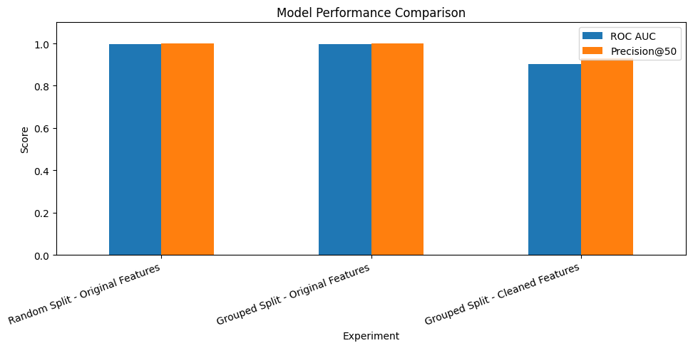
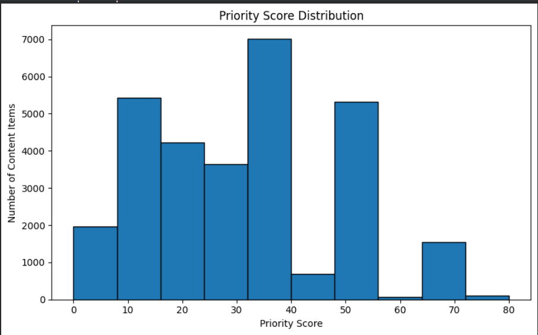
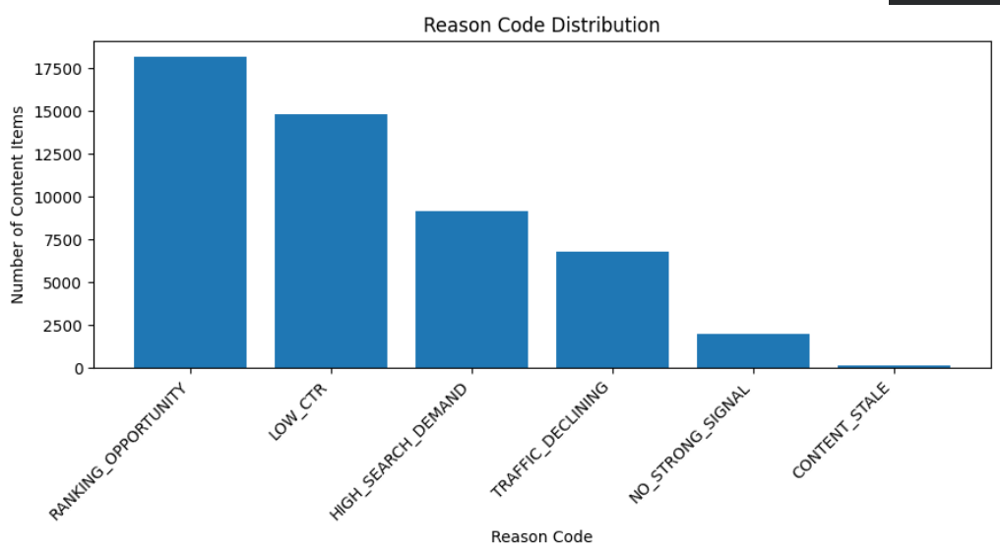
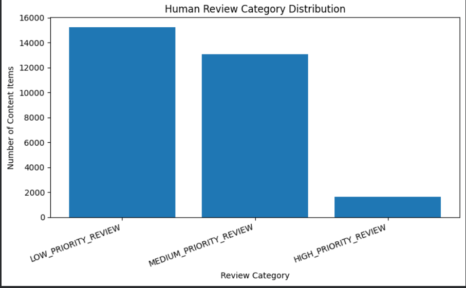

Abstract
This project focuses on identifying website content that may need refreshing. The study uses an anonymized dataset of 30,000 content records and a separate warehouse sample containing 11.69 million daily performance records.
A Random Forest model was evaluated using grouped-by-client validation. After removing direct label-derived features, the model achieved a mean ROC-AUC of 0.903 and mean Precision@50 of 0.928.
The results show that machine learning can support content prioritization, but human review and further validation are necessary before practical use.
1. Introduction
Website content may lose performance over time. A page may receive fewer clicks, have a low click-through rate, or have opportunities to improve its search ranking.
The purpose of this project is to identify content that may need attention and help prioritize content refresh activities.
The project explores machine learning and rule-based prioritization to support human decision-making.
2. Dataset Description
Dataset 1: Warehouse Sample
- 11,694,072 daily performance records
- 65 clients
- 409,205 unique content items
- Data period: June 1–30, 2026
Dataset 2: Anonymized Validation Dataset
- 30,000 records
- 32 client groups
- Positive proxy-label rate: 22.7%
The two datasets were used for different purposes and were not combined. Some fields were missing or unavailable.
3. Methodology
The project followed these steps:
- Explored the available datasets.
- Checked missing values and data quality.
- Identified possible features related to content performance.
- Created a proxy target named needs_refresh.
- Trained a Random Forest Classifier.
- Evaluated the model using grouped-by-client validation.
- Removed direct label-derived features to reduce data leakage.
- Created a rule-based action prioritization system.
4. Results
The Random Forest model was evaluated using different validation approaches.
Model Evaluation
| Evaluation | ROC-AUC | Precision@50 |
|---|---|---|
| Random split – Original features | 0.997 | 1.000 |
| Grouped split – Original features | 0.997 | 1.000 |
| Grouped split – Cleaned features | 0.903 | 0.928 |
After removing direct label-derived features, the model achieved a mean ROC-AUC of 0.903 and mean Precision@50 of 0.928 across grouped validation folds.
4.1 Model Performance Graph

Rule-Based Prioritization Results
| Priority Category | Number of Records |
|---|---|
| High Priority | 1,654 |
| Medium Priority | 13,079 |
| Low Priority | 15,267 |
The rule-based system assigned scores based on traffic decline, content staleness, low CTR, ranking opportunities, and search demand.
4.2 Priority Score Distribution

4.3 Reason Code Distribution

4.4 Human Review Distribution

5. Limitations
- The target variable is a proxy label, not an actual content refresh outcome.
- Some dataset fields contain missing values.
- The warehouse sample covers only one month.
- Further time-aware validation is required.
- Some window-overlap features need additional leakage investigation.
- Model predictions do not guarantee improved website performance.
Therefore, the model should be used as a decision-support tool, not as an automatic decision-maker.
6. Recommendations
- Review pages with declining traffic.
- Investigate pages with low CTR.
- Check content that has not been updated for a long time.
- Review pages ranking between positions 4 and 20.
- Prioritize pages with high search demand.
- Verify data quality before taking action.
- Require human approval before implementing content changes.
7. Reproducibility
The project notebooks and supporting files are available in the GitHub repository.
GitHub Repository: View Repository
Main Capstone Notebook: work/notebooks/capstone.ipynb
Action Playbook Notebook: work/notebooks/w07_action_playbook.ipynb
8. Acknowledgements
I would like to thank FlyRank AI for providing the opportunity to work on this project as part of the Machine Learning Engineering Internship.
This project helped me understand data analysis, machine learning evaluation, data leakage, validation, and practical content prioritization.